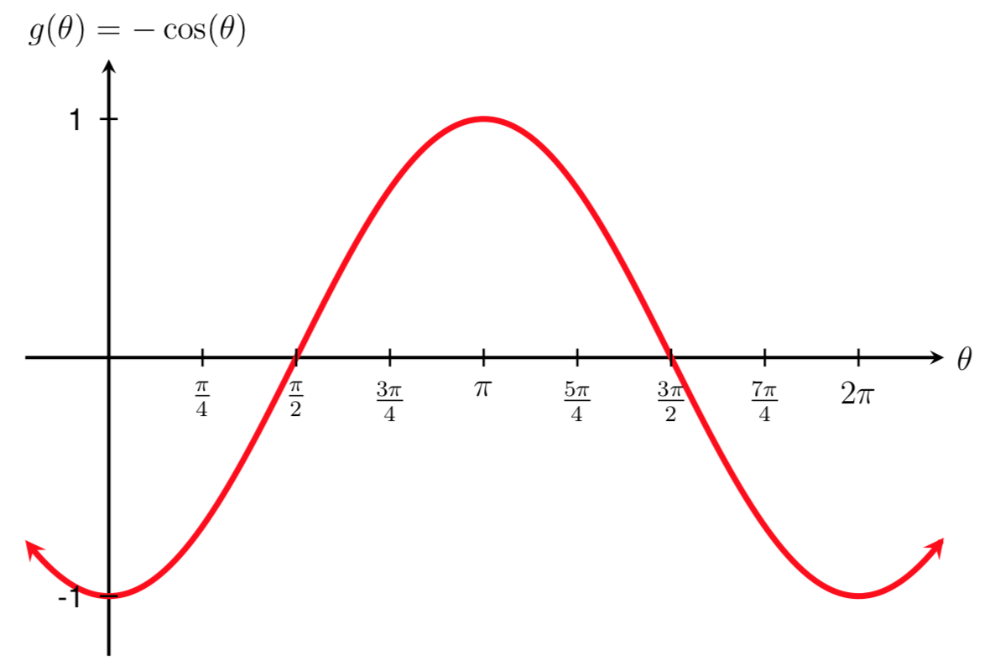

SectionGeneralized Sinusoidal Functions
¶
In Chapter 1, we introduced trigonometric functions. Like all functions, trigonometric functions can be transformed by changing properties like the period, midline, and amplitude of the function. In this section, we explore transformations of the sine and cosine functions and use them to model real life situations.
Transformations of Sine and Cosine
Given an equation in the form
\begin{equation*}
f(t) = A\sin(Bt)+k \hspace{.25in} \text{ or } \hspace{.25in} g(t) = A\cos(Bt)+k
\end{equation*}
\(|A| \ \) is the vertical stretch/compression and the amplitude of the function.
\(|B| \ \) is the horizontal stretch/compression and is related to the period of the function, \(P\text{,}\) by the formula
\begin{equation*}
P=\frac{2\pi}{|B|}
\end{equation*}
\(k \ \) is the vertical shift and determines the midline of the function.
The next three examples build on each other to demonstrate how we can use transformations to graph complicated trigonometric functions.
Example53
Sketch a graph of the function
\begin{equation*}
g(t)=\sin(t)+4
\end{equation*}
SolutionTo begin, let's find the period, midline, and amplitude of the function.
Using the relationships above, the stretch/compression factor is \(|B|=|1|=1\text{.}\) Therefore, the period is
\begin{equation*}
P = \frac{2\pi}{|B|} = \frac{2\pi}{|1|} = 2\pi
\end{equation*}
The vertical stretch/compression factor is \(|A|=|1|=1\text{,}\) so the amplitude is 1.
Finally, the vertical shift of the function is \(k=4\text{,}\) so the midline of the function is
\begin{equation*}
y=4
\end{equation*}
Using our knowledge of the graph of \(f(t)=\sin(t)\text{,}\) we can sketch a transformed graph of \(g(t)=\sin(t)+4\text{.}\) Note that the period of both functions is \(2\pi\) and the amplitude of both is \(1\text{.}\) Thus, the graph of \(g(t)=\sin(t)+4\) involves only a vertical shift up by 4 from the original graph of \(f(t)=\sin(t)\text{,}\) which we discussed in Section . The graph of \(g(t)=\sin(t)+4\) is shown below.
The previous example illustrated a vertical shift of the sine function. We now build on this example to graph a sine function that has both a vertical shift and a vertical stretch.
Example54
Sketch a graph of the function
\begin{equation*}
g(t)=3\sin(t)+4
\end{equation*}
SolutionTo begin, let's find the period, midline, and amplitude of the function.
Using the relationships above, the stretch/compression factor is \(|B|=|1|\text{.}\) Therefore, the period is
\begin{equation*}
P = \frac{2\pi}{|B|} = \frac{2\pi}{|1|} = 2\pi
\end{equation*}
The vertical stretch/compression factor is \(|A|=|3|=3\text{,}\) so the amplitude is 3.
Finally, the vertical shift of the function is \(k=4\text{,}\) so the midline of the function is
\begin{equation*}
y=4
\end{equation*}
Using our knowledge of the graph of \(f(t)=\sin(t)\text{,}\) we can sketch a transformed graph of \(g(t)=3\sin(t)+4\text{.}\) Note that the period of both functions is \(2\pi\text{.}\) Thus, the graph of \(g(t)=3\sin(t)+4\) involves a vertical shift up by 4 and a vertical stretch of 3 from the original graph of \(f(t)=\sin(t)\text{,}\) which we discussed in Section . The graph of \(g(t)=3\sin(t)+4\) is shown below.
In the example below, we build on the previous two examples and graph a sine function with a vertical shift, a vertical stretch, and a horizontal compression.
Example55
Sketch a graph of the function
\begin{equation*}
g(t)=3\sin(2t)+4
\end{equation*}
SolutionTo begin, let's find the period, midline, and amplitude of the function.
Using the relationships above, the stretch/compression factor is \(|B|=|2|\text{.}\) Therefore, the period is
\begin{equation*}
P = \frac{2\pi}{|B|} = \frac{2\pi}{|2|} = \pi
\end{equation*}
The vertical stretch/compression factor is \(|A|=|3|=3\text{,}\) so the amplitude is 3.
Finally, the vertical shift of the function is \(k=4\text{,}\) so the midline of the function is
\begin{equation*}
y=4
\end{equation*}
Using our knowledge of the graph of \(f(t)=\sin(t)\text{,}\) we can sketch a transformed graph of \(g(t)=3\sin(2t)+4\text{.}\) Note that the period, midline and amplitude of both functions is different. Thus, the graph of \(g(t)=3\sin(t)+4\) involves a vertical shift up by 4, a vertical stretch of 3, and a horizontal compression by a factor of \(1/2\) from the original graph of \(f(t)=\sin(t)\text{,}\) which we discussed in Section . The graph of \(g(t)=3\sin(2t)+4\) is shown below.
Example56
Determine the midline, amplitude, and period and sketch a graph of the function
\begin{equation*}
f(t)=2\cos\left(\frac{\pi}{4}t\right)+1
\end{equation*}
SolutionTo begin, let's find the period, midline, and amplitude of the function.
Using the relationships above, the stretch/compression factor is \(|B|=|\pi/4|\text{.}\) Therefore, the period of the function is
\begin{equation*}
P = \frac{2\pi}{|B|} = \frac{2\pi}{|\pi/4|} = 2\pi \cdot \frac{4}{\pi} = 8
\end{equation*}
The vertical stretch/compression factor is \(|A|=|2|=2\text{,}\) so the amplitude of the function is 2.
Finally, the vertical shift of the function is \(k=1\text{,}\) so the midline of the function is
\begin{equation*}
y=1
\end{equation*}
Using our knowledge of the graph of \(g(t)=\cos(t)\text{,}\) we can sketch a transformed graph of
\begin{equation*}
f(t)=2\cos\left(\frac{\pi}{4}(t)\right)+1\text{.}
\end{equation*}
Note that the period, midline and amplitude of both functions is different. Thus, the transformed graph involves a vertical shift up by 1, a vertical stretch of 2, and a horizontal stretch by a factor of \(4/\pi\) from the original graph of \(g(t)=\cos(t)\text{,}\) which we discussed in Section . Shown below is the graph of the transformed function
\begin{equation*}
f(t)=2\cos\left(\frac{\pi}{4}(t)\right)+1
\end{equation*}
In addition to changing the period, midline, and amplitude of a periodic function, we can also transform it by applying a vertical reflection.
Vertical Reflections
In Section we introduced the graphs of \(f(\theta) = \sin(\theta)\) and \(g(\theta) = \cos(\theta)\text{.}\) For both of these functions, \(A=1\text{.}\) Changing this \(A\) value from a positive number to a negative number results in a vertical reflection across the \(x\)-axis.
The graphs of \(f(\theta) = \sin(\theta)\) and \(f(\theta) = -\sin(\theta)\) are shown below for comparison.
 \(\hspace{.33in}\) Graph of \(f(\theta) = \sin(\theta)\)
\(\hspace{.33in}\) Graph of \(f(\theta) = \sin(\theta)\)
 \(\hspace{.3in}\) Graph of \(f(\theta) = -\sin(\theta)\)
\(\hspace{.3in}\) Graph of \(f(\theta) = -\sin(\theta)\)
Note that the function \(f(\theta)=\sin(\theta)\) crosses the \(y\)-axis at the midline when it is increasing, while the function \(f(\theta)=-\sin(\theta)\) crosses the \(y\)-axis at the midline when it is decreasing.
Unlike the graphs shown above, the graphs of \(g(\theta) = \cos(\theta)\) and \(g(\theta) = -\cos(\theta)\) do not cross the \(y\)-axis at the midline. Rather, they cross at the maximum or minimum value of the function, as shown below.
 \(\hspace{.33in}\) Graph of \(g(\theta) = \cos(\theta)\)
\(\hspace{.33in}\) Graph of \(g(\theta) = \cos(\theta)\)
 \(\hspace{.3in}\) Graph of \(g(\theta) = -\cos(\theta)\)
Note that the function \(g(\theta)=\cos(\theta)\) crosses the \(y\)-axis at its maximum value, while the function \(g(\theta)=-\cos(\theta)\) crosses the \(y\)-axis at its minimum value.
Becoming familiar with the graphs of the functions above will help us when deciding what function to use when modeling a graph.
Transforming the amplitude, midline, and period of sinusoidal functions, along with vertical reflections, allow us to write equations for a variety of periodic situations.
Example57
Find a formula for the sinusoidal function graphed below.
SolutionTo begin, let's find the period, midline, and amplitude of the function graphed above.
Recall that the period of the function is how long it takes for the function to start repeating, as discussed in Section . If we think about the function "starting" at \(x=0\text{,}\) or when it crosses the \(y\)-axis, we can see that the function above begins repeating when \(x=5\text{.}\) Therefore, the period of the function graphed above is 5.
Since the period of a function is related to \(B\text{,}\) the stretch/compression factor, we can use the relationship \(P = 2\pi/|B|\) to solve for \(B\text{.}\) Substituting 5 in for \(P\text{,}\) we get
\begin{align*}
5 \amp= \frac{2\pi}{|B|} \\
\\
|B| \cdot 5 \amp= 2\pi \\
\\
|B| \amp= \frac{2\pi}{5}
\end{align*}
For now, we can assume that the \(B\) value is positive, which gives us
\begin{equation*}
B = \frac{2\pi}{5}
\end{equation*}
The midline of the function is the horizontal line halfway between the function's maximum and minimum values. Here, the maximum value of the function is 4 and the minimum value is 0. The number halfway between 4 and 0 is 2, so the midline is the line \(y=2\text{.}\) Therefore, the vertical shift of the function graphed above is
\begin{equation*}
k=2
\end{equation*}
Finally, the amplitude of the function is the distance between the function's maximum value and the midline. The distance between the function's maximum value of 4 and the function's midline of \(y=2\) is 2, so the amplitude of the function above is 2. Therefore, the vertical stretch factor is
\begin{equation*}
|A|=2
\end{equation*}
We now need to decide what type of sinusoidal function to use and whether \(A\) is positive or negative. Note that the function shown above crosses the \(y\)-axis at its minimum value. Therefore, from our work above, we need to use a vertical reflection of a cosine graph to model this function, which means that
\begin{equation*}
A=-2
\end{equation*}
Using our work above and substituting our known values into the generalized cosine function \(g(t)=A\cos(Bt) + k\) gives us the following formula for the function graphed above.
\begin{equation*}
f(t) = -2\cos\left(\frac{2\pi}{5}t\right) + 2
\end{equation*}
To check our solution, we can use a graphing calculator to graph the function we came up with and confirm that it matches the graph shown above.
Horizontal Reflections
In the example above, we assumed that the \(B\) value was positive. Changing the \(B\) value from a positive number to a negative number results in a horizontal reflection across the \(y\)-axis.
Note that if we reflect the function \(f(\theta) = \sin(\theta)\) horizontally across the \(y\)-axis, we get the same graph as the function \(f(\theta)=-\sin(\theta)\text{.}\) Therefore,
\begin{equation*}
\sin(-\theta)=-\sin(\theta)
\end{equation*}
Another way to explain this relationship is to say that sine is an odd function because the graph of \(f(\theta) = \sin(\theta)\) is symmetric about the origin.
 \(\hspace{.33in}\) Graph of \(f(\theta) = \sin(\theta)\)
\(\hspace{.33in}\) Graph of \(f(\theta) = \sin(\theta)\)
 \(\hspace{.3in}\) Graph of \(f(\theta) = \sin(-\theta)\)
\(\hspace{.3in}\) Graph of \(f(\theta) = \sin(-\theta)\)
If we reflect the function \(g(\theta) = \cos(\theta)\) horizontally across the \(y\)-axis, we get the same graph. Therefore,
\begin{equation*}
\cos(-\theta)=\cos(\theta)
\end{equation*}
Another way to explain this relationship is to say that cosine is an even function because the graph of \(g(\theta) = \cos(\theta)\) is symmetric about the \(y\)-axis.
 \(\hspace{.33in}\) Graph of \(g(\theta) = \cos(\theta)\)
\(\hspace{.33in}\) Graph of \(g(\theta) = \cos(\theta)\)
 \(\hspace{.3in}\) Graph of \(g(\theta) = \cos(-\theta)\)
\(\hspace{.3in}\) Graph of \(g(\theta) = \cos(-\theta)\)
Example59
Find a possible formula for a sinusoidal function with an amplitude of 2, a period of 4, and that crosses the \(y\)-axis on the midline at the point \((0,3)\text{.}\) Assume that the function is decreasing when it crosses the midline.
SolutionTo begin, let's sketch a graph of the function based on the known information. We know that the graph crosses the \(y\)-axis on the midline at the point \((0,3)\) and that the function is decreasing at that point. We also know that the amplitude of the function is 2 and the period is 4. Below is a graph of the function that fits this description.
Since we know the period is 4, we can use the relationship \(P = 2\pi/|B|\) to solve for B. Substituting 4 in for \(P\text{,}\) we get
\begin{align*}
4 \amp= \frac{2\pi}{|B|} \\
\\
|B| \cdot 4 \amp= 2\pi \\
\\
|B| \amp= \frac{2\pi}{4} \\
\\
|B| \amp= \frac{\pi}{2}
\end{align*}
Let's assume that the \(B\) value is positive, so
\begin{equation*}
B = \frac{\pi}{2}
\end{equation*}
Next, we know that the function crosses the \(y\)-axis at the point \((0,3)\text{,}\) which is on the midline of the function. Therefore, the midline of the function is \(y=3\) so
\begin{equation*}
k=3
\end{equation*}
Finally, the amplitude of the function is 2, so
\begin{equation*}
|A|=2
\end{equation*}
We now need to decide what type of sinusoidal function to use and whether \(A\) is positive or negative. Note that the function above crosses the \(y\)-axis at its midline. Therefore, we can use a sine graph to model this function. Since the function is decreasing as it crosses the \(y\)-axis, we also need to use a vertical reflection, which means that
\begin{equation*}
A=-2
\end{equation*}
Using our work above and substituting our known values into the generalized sine function \(f(t)=A\sin(Bt) + k\) gives us the following formula for the function described and graphed above.
\begin{equation*}
f(t) = -2\sin\left(\frac{\pi}{2}t\right) + 3
\end{equation*}
To check our solution, we can use a graphing calculator to graph the function we came up with and confirm that it matches the graph shown above.
Example60
The London Eye is a huge Ferris wheel in London, England. It completes one full rotation every 30 minutes, and the diameter of its passenger capsules is 130 meters. Riders board the passenger capsules from a platform that is 5 meters above the ground. At time \(t=0\text{,}\) an individual boards the Ferris wheel.
Find a formula for \(h=f(t)\text{,}\) where \(h\) is the height of the individual above ground (in meters) after \(t\) minutes.
SolutionRecall that in the London Eye example, we sketched a graph of \(h=f(t)\) for the situation described above. This graph is shown below.

Since we have already sketched a graph of this function, we can use this graph to construct a formula for this function.
As shown on the graph, the period of the function is 30 minutes. Therefore, the \(B\) value of the function is
\begin{equation*}
|B| = \frac{2\pi}{P} = \frac{2\pi}{30} = \frac{\pi}{15}
\end{equation*}
Again, we assume that \(B\) is positive, so
\begin{equation*}
B=\frac{\pi}{15}
\end{equation*}
The maximum value of the function is 135 meters and the minimum value is 5 meters. The midline is halfway in between these two values and can be found by averaging them:
\begin{equation*}
\frac{135+5}{2} = \frac{140}{2} = 70 \text{ meters}
\end{equation*}
Thus, the midline of the function is the line \(y=70\) meters, and
\begin{equation*}
k=70
\end{equation*}
The amplitude of the function is the distance between the maximum value and the midline which is \(135-70=65\) meters. Therefore,
\begin{equation*}
|A|=65
\end{equation*}
Finally, we need to determine what type of function to use and whether the \(A\) value is positive or negative. Since the graph of the function crosses the \(y\)-axis at its minimum value, we can use a negative cosine graph to represent this function. Therefore,
\begin{equation*}
A=-65
\end{equation*}
Using our work above and substituting our known values into the generalized cosine function \(g(t)=A\cos(Bt) + k\) gives us the following formula for \(h=f(t)\)
\begin{equation*}
f(t) = -65\cos\left(\frac{\pi}{15}t\right) + 70
\end{equation*}
To check our solution, we can use a graphing calculator to graph the function we came up with and confirm that it matches the graph shown above.
Exercise61
The Ferris wheel at the Iowa State Fair has a diameter of about 70 feet and takes 3 minutes to complete a full rotation. Passengers board from a platform 10 feet above the ground. At time \(t=0\text{,}\) a rider is at the 3 o'clock position on the Ferris wheel and ascending. Find a formula for \(h=f(t)\text{,}\) where \(h\) is the height of the rider above ground (in feet) after \(t\) minutes.
While the transformations above are sufficient to represent many situations, occasionally we encounter a sinusoidal function that does not cross the \(y\)-axis at the lowest point, highest point, or midline. In these cases, we need to use horizontal shifts. Since we are combining horizontal shifts with horizontal stretches, we need to be careful. Recall that when the inside of the function is factored, it reveals the horizontal shift.
Horizontal Shifts of Sine and Cosine
Given an equation in the form
\begin{equation*}
f(t) = A\sin\left(B(t-h)\right)+k \hspace{.25in} \text{ or } \hspace{.25in} g(t) = A\cos\left(B(t-h)\right)+k
\end{equation*}
\(h \ \) is the horizontal shift of the function.
If \(h\) is positive, then the graph of the original function shifts to the right. If \(h\) is negative, then the graph of the original function shifts to the left.
Example62
Sketch a graph of \(\displaystyle f(t)=4\sin\left(\frac{\pi}{3}t-\frac{\pi}{3}\right)\text{.}\)
SolutionTo reveal the horizontal shift, we first need to factor what is inside the sine function. Factoring out a \(\pi/3\) from both terms gives us
\begin{equation*}
f(t) = 4\sin\left(\frac{\pi}{3}(t-1)\right)
\end{equation*}
Now that the function is in the form \(f(t)=A\sin(B(t-h))+k\text{,}\) we can determine the period, midline, amplitude, and horizontal shift of the function in order to help us graph it.
The stretch/compression factor is \(|B|=|\pi/3|\) so the period is
\begin{equation*}
P = \frac{2\pi}{|B|} = \frac{2\pi}{|\pi/3|} = 2\pi \cdot \frac{3}{\pi} = 6
\end{equation*}
The vertical stretch/compression factor is \(|A|=|4|=4\text{,}\) so the amplitude of the function is 4.
The vertical shift of the function is \(k=0\text{,}\) so the midline of the function is \(y=0\text{,}\) which is the \(x\)-axis. Therefore, there is no vertical shift of this function.
Finally, the horizontal shift of the function is \(h=1\text{.}\) Since \(h\) is positive, the graph will be shifted to the right by 1.
Using our knowledge of the graph of \(f(t)=\sin(t)\text{,}\) we can sketch a transformed graph of
\begin{equation*}
f(t) = 4\sin\left(\frac{\pi}{3}(t-1)\right)
\end{equation*}
Note that the midline of the two functions is the same, but their amplitude and period are different. In addition, the transformed function is shifted horizontally from the original function. Therefore, the transformed graph involves a vertical stretch of 4, a horizontal compression by a factor of \(3/\pi\text{,}\) and a horizontal shift right by 1 from the original graph of \(f(t)=\sin(t)\text{,}\) which we discussed in Section . Shown below is the graph of the transformed function
\begin{equation*}
f(t) = 4\sin\left(\frac{\pi}{3}(t-1)\right)
\end{equation*}
In some physics and mathematics books, you will hear the horizontal shift \(h\) referred to as the phase shift. In other physics and mathematics books, they would say the phase shift of the generalized equations above is \(Bh\text{.}\) Because of this ambiguity, we will not use the term phase shift any further and will only talk about horizontal shifts.